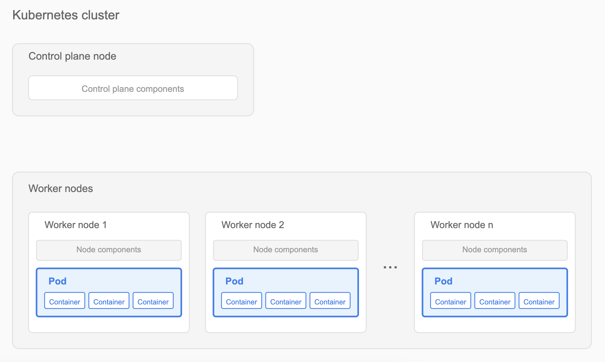
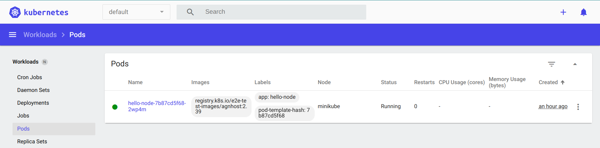

Overview
Pods are the smallest deployable units in Kubernetes and critical to application functionality. Debugging pods helps ensure applications run smoothly, scale seamlessly, and use cluster resources effectively.

This article helps Kubernetes cluster administrators and developers diagnose and troubleshoot pod issues. After reading, you will be able to:
- Inspect pod status in a cluster.
- Analyze logs for debugging.
- Execute shell commands within containers.
- Use ephemeral containers for interactive debugging.
Prerequisites
Before starting, verify that you have:
- Access to a Kubernetes cluster with running pods.
- Sufficient permissions to execute
kubectlcommands.
Debugging pods in a Kubernetes cluster
The following sections describe common debugging techniques. Use these techniques sequentially or combine them based on your specific scenario.
1. What does pod status tell you?
Begin debugging by checking the status of your pods.
To list all pods:
kubectl get podsTo list pods in a specific namespace:
kubectl get pods --namespace=<namespace-name>Example:
kubectl get pods --namespace=defaultExpected output:
NAME READY STATUS RESTARTS AGE
hello-node-7b87cd5f68-2wp4m 1/1 Running 0 21m
nginx-deployment-66b6c48dd5-8k4h2 0/1 Pending 0 5m
redis-master-58db8984f-xp4c8 0/1 ImagePullBackOff 0 2mIf a pod is stuck in Pending status, check cluster resource availability by running the following command:
kubectl describe node <node-name>For a graphical interface, use the Kubernetes dashboard:
- Open the Kubernetes dashboard.
- Navigate to the Pods section.
- Select a pod to view its details.

2. What do the logs reveal?
Logs help identify what a container is doing or why it failed.
To view logs from all containers in a pod:
kubectl logs <pod-name> --all-containers=trueTo view logs from a specific container:
kubectl logs <pod-name> -c <container-name>For pods with a single container, omit the container name.
Example:
kubectl logs hello-node-7b87cd5f68-2wp4mExpected output:
I0715 06:51:04.198447 1 log.go:195] Started HTTP server on port 8080
I0715 06:51:04.198572 1 log.go:195] Started UDP server on port 8081For pods in CrashLoopBackOff status, check logs with the --previous flag to see the last container’s logs before it crashed:
kubectl logs <pod-name> --previous3. How do you inspect inside a container?
Inspect container state by running shell commands directly inside it.
Syntax:
kubectl exec <pod-name> -c <container-name> -- <command>If not specified, commands run in the first container of the pod.
Check container environment variables:
kubectl exec nginx-deployment-66b6c48dd5-8k4h2 -- envExpected output:
PATH=/usr/local/sbin:/usr/local/bin:/usr/sbin:/usr/bin:/sbin:/bin
HOSTNAME=nginx-deployment-66b6c48dd5-8k4h2
NGINX_VERSION=1.21.1
NJS_VERSION=0.6.1
PKG_RELEASE=1~buster
HOME=/rootVerify network connectivity:
kubectl exec nginx-deployment-66b6c48dd5-8k4h2 -- curl -I localhost:80Expected output:
HTTP/1.1 200 OK
Server: nginx/1.21.1
Date: Tue, 14 Jan 2025 10:15:23 GMT
Content-Type: text/html
Content-Length: 612
Connection: keep-aliveCheck running processes:
kubectl exec nginx-deployment-66b6c48dd5-8k4h2 -- ps auxExpected output:
USER PID %CPU %MEM VSZ RSS TTY STAT START TIME COMMAND
root 1 0.0 0.1 10640 5548 ? Ss 10:00 0:00 nginx: master process
nginx 31 0.0 0.1 11088 5164 ? S 10:00 0:00 nginx: worker processFor containers that crash immediately, create a copy of the pod with a sleep command:
kubectl debug <pod-name> --copy-to=<pod-name>-debug --container=<container-name> -- sleep 1d4. When should you use ephemeral containers?
Ephemeral containers let you attach debugging tools to running pods without modifying the original containers. They are especially useful when a container’s image lacks a shell or debugging utilities.
To create an ephemeral debug container:
kubectl debug <pod-name> -it --image=<debug-image>Debug networking issues using netshoot:
kubectl debug nginx-deployment-66b6c48dd5-8k4h2 -it --image=nicolaka/netshootExpected output:
Defaulting debug container name to debugger-nx8j2.
If you don't see a command prompt, try pressing enter.
~ # dig kubernetes.default.svc.cluster.local
~ # curl -v telnet://nginx-service:80
~ # tcpdump -i any port 80Analyze memory usage with tools:
kubectl debug redis-master-58db8984f-xp4c8 -it --image=ubuntuExpected output:
Defaulting debug container name to debugger-7xj4d.
If you don't see a command prompt, try pressing enter.
root@redis-master-58db8984f-xp4c8:/# apt-get update
root@redis-master-58db8984f-xp4c8:/# apt-get install -y procps
root@redis-master-58db8984f-xp4c8:/# top
...Memory usage details...For pods with ImagePullBackOff status, verify the image name and registry credentials. Check image pull secrets using:
kubectl get pod <pod-name> -o=jsonpath='{.spec.imagePullSecrets[0].name}'